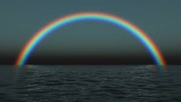

Uma the Wonderdog!
By Joshua Forman, as told to Lara Bjork
Uma is the best. She was born under a double moon on a secret island under a night rainbow. She's good at running.

All Star Qualities
- Cute Face
- So Smart
- Excellent Swimmer
- Snuggly
- Guard Dog
- Whispers Mantra When You're Not Looking
Dog Park Recommendation
Uma's favorite dog park is Fort Funston.